Original handwritten form — f1690_24
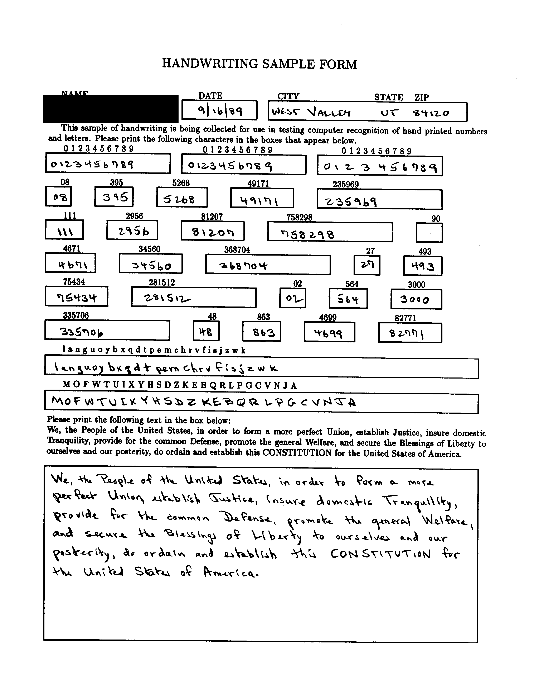
169 extracted characters
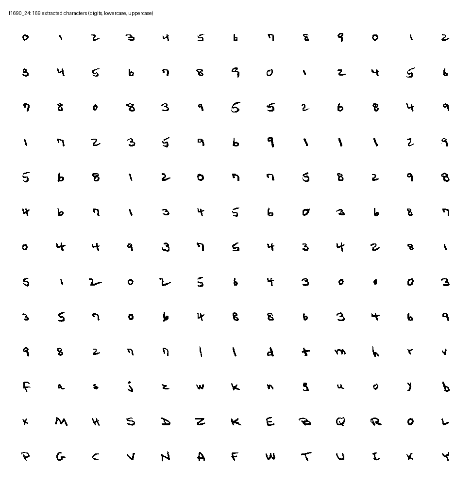
A machine-learning dataset of handwritten digits
MNIST is a dataset of 800,000 grayscale images of handwritten digits collected from 3500 census workers and high schoolers in 1989 for the purpose of training and testing some of the first machine learning models. The characters scraped off of the "handwriting sample forms" were normalized and used for creating Optical Character Recognition (OCR) models for various government services like the USPS and Social Security Administration.


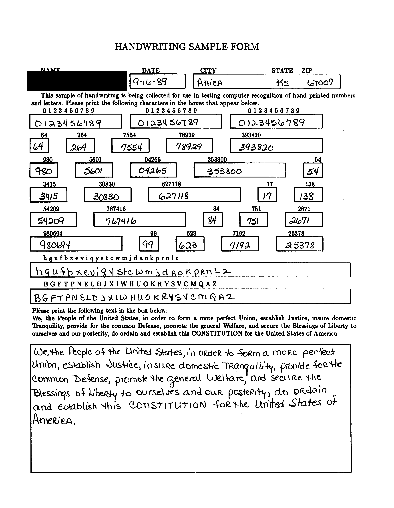
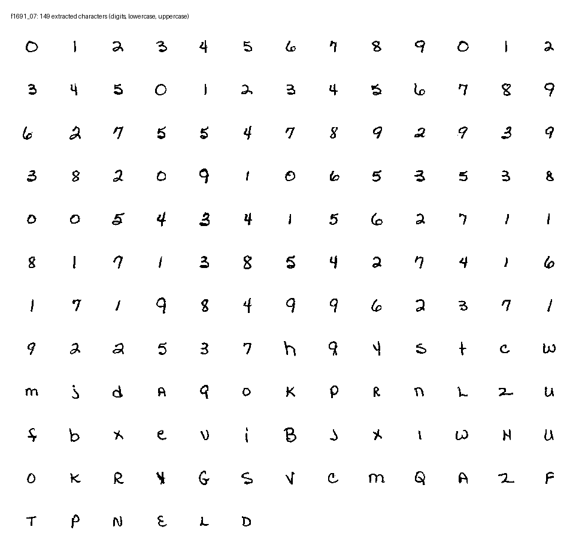
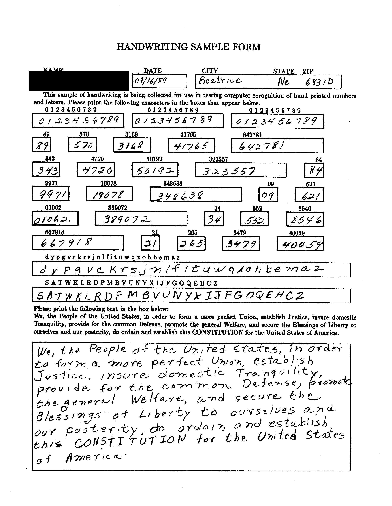
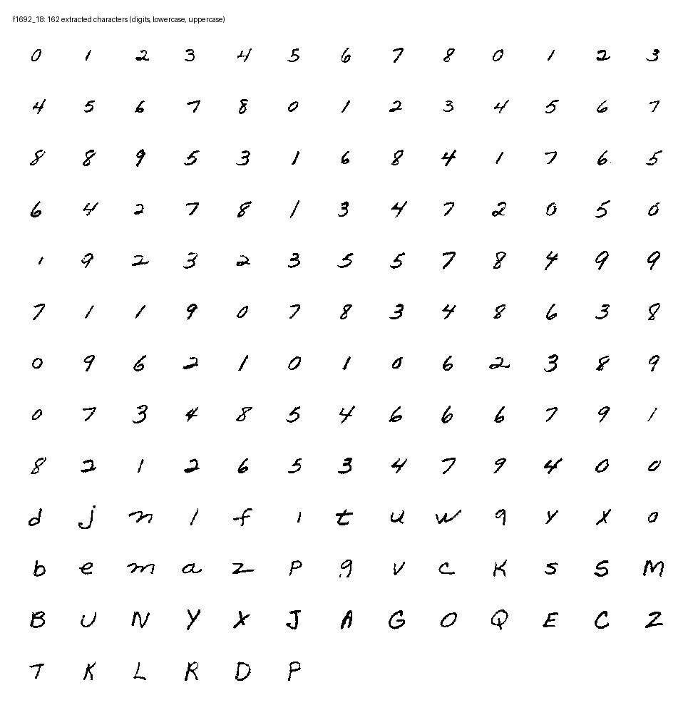
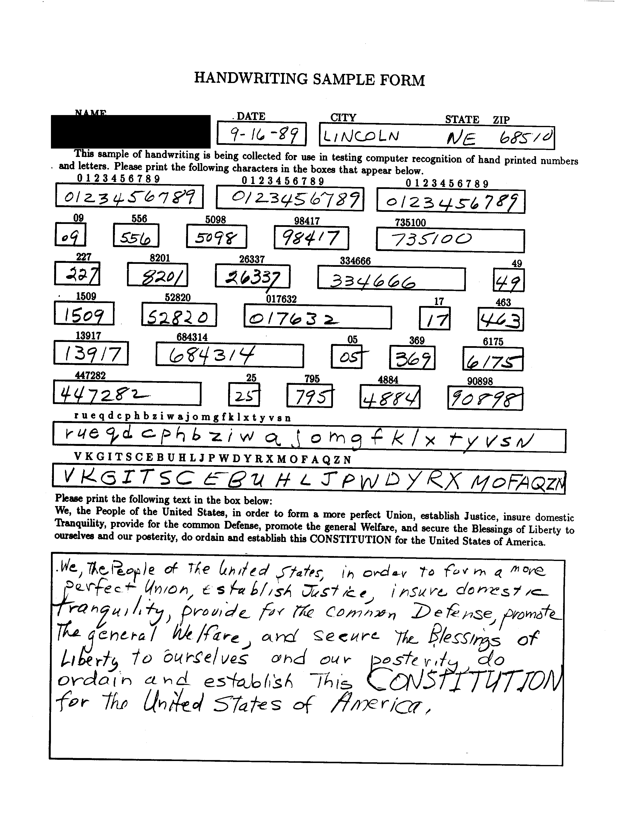
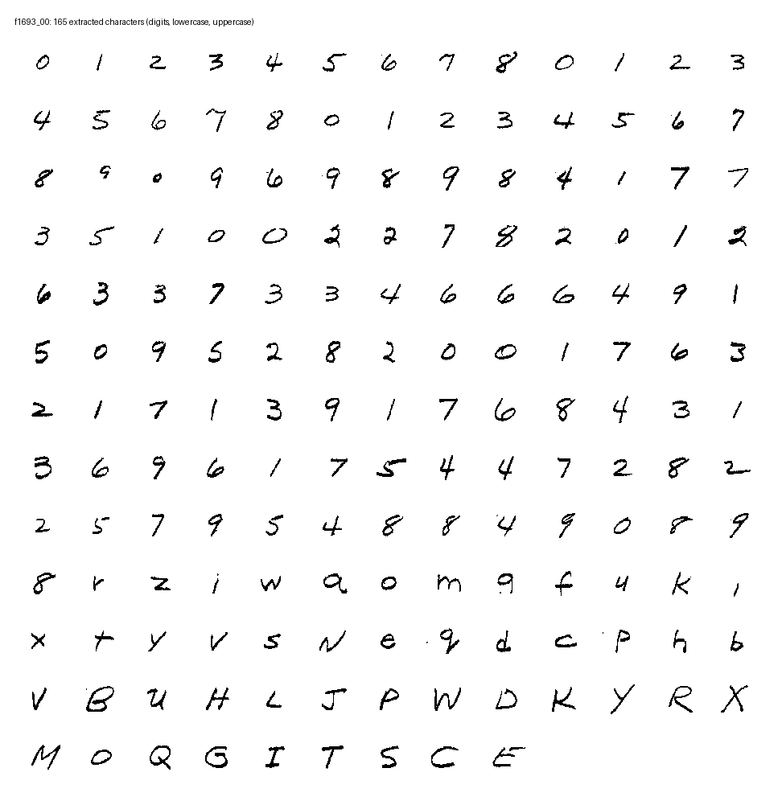
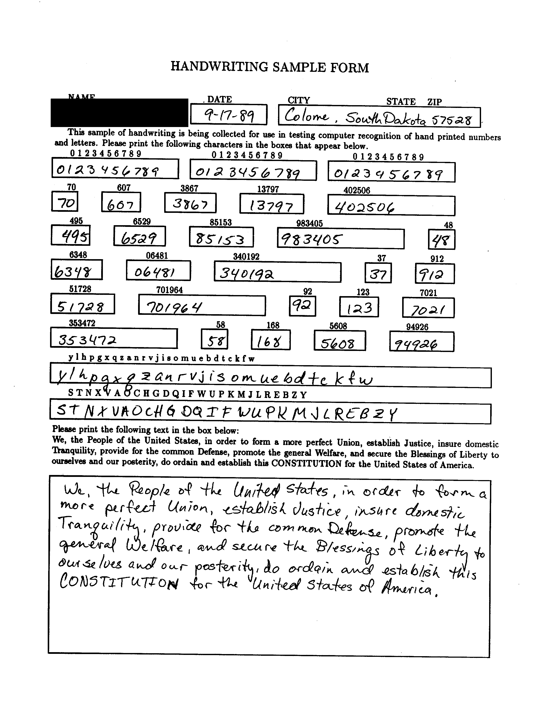
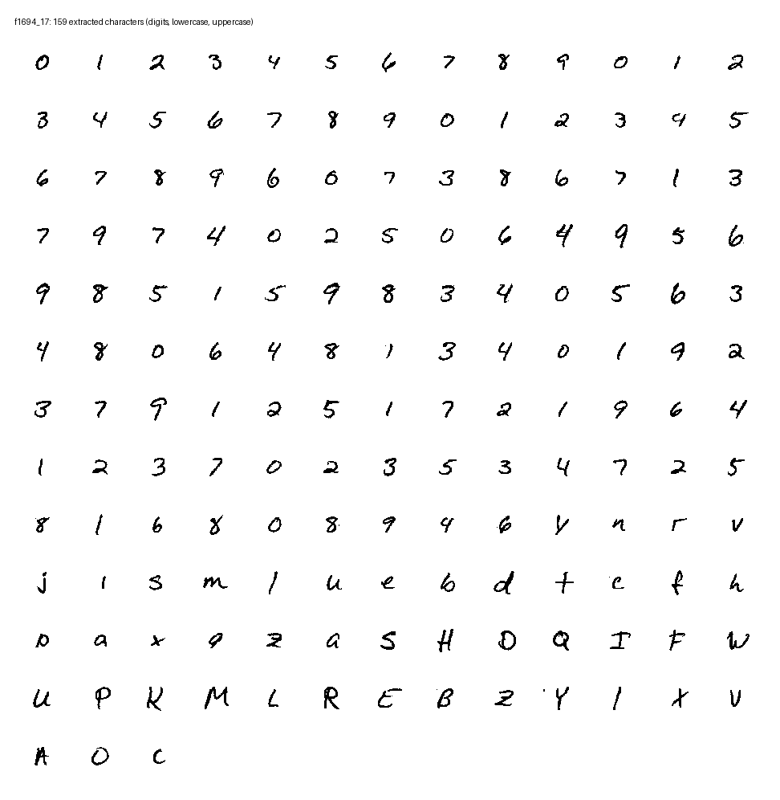
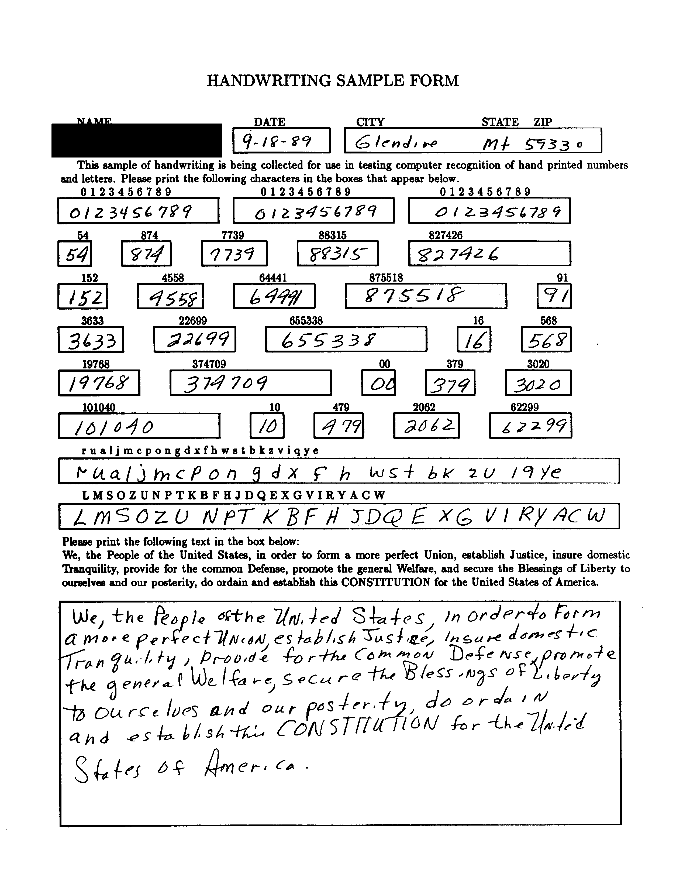
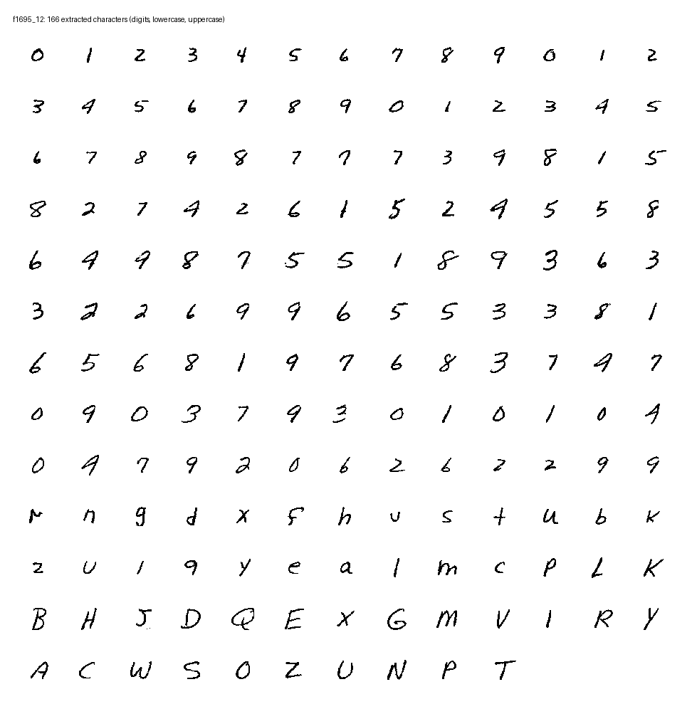
Source: MNIST Database of Handwritten Digits